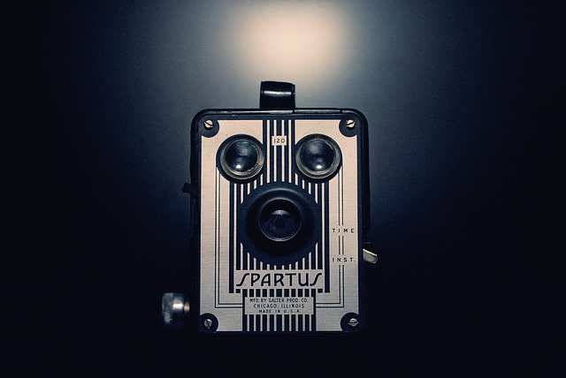

공식 색은 2016년 9월 23일 애프리콧(712C)[8]와 네온 마젠타(812C)[9]로 정해졌다. 그룹명이 TWICE라서 2가지 색상을 사용하였으며 동시에 ONCE와 TWICE가 언제나 함께하라는 의미라고 한다. APRICOT와 NEON MAGENTA 두 색상을 그라데이션하여 만들었으며 주의할 점은 두 가지 색을 함께 써야 공식 색이라는 것. 참고[10] 공식 색이 정해지기 전에는 핑크색이나 멜론 색 등을 사용했다.